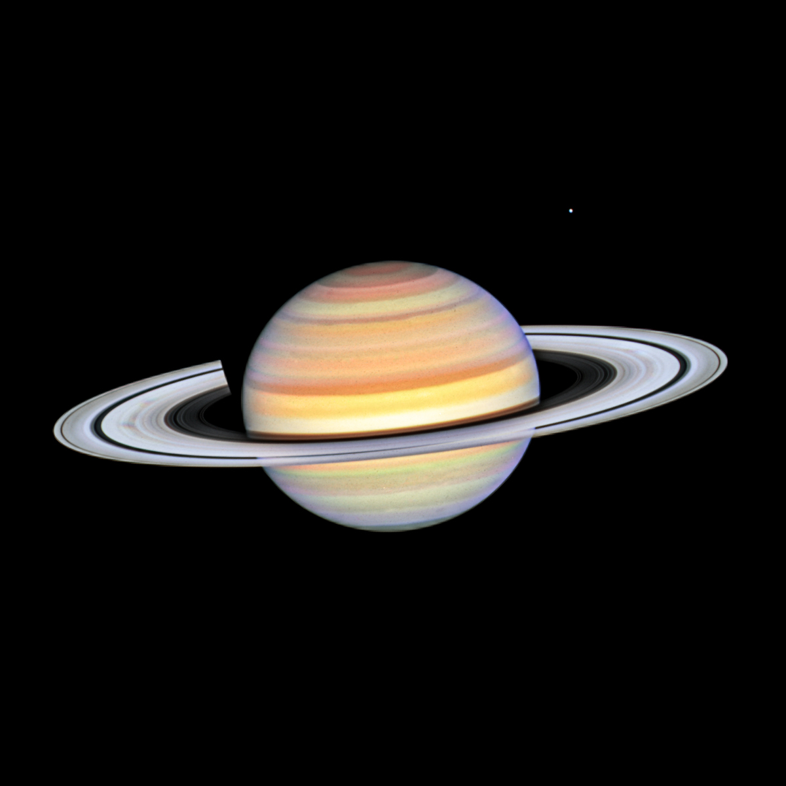

Discover Saturn
Overview
Saturn (Zuhal) is the sixth planet from the Sun and is famous for its stunning system of rings made of ice and rock particles. Like Jupiter, it is a gas giant mostly made of hydrogen and helium, with no solid surface. Saturn has many moons and is known for its low density—it could float in water if a big enough ocean existed!
Physical Properties
Diameter: 116,460 km (about 9.5 times Earth's diameter)
Surface Gravity: 10.44 m/s² (slightly stronger than Earth’s gravity)
Temperature: Average cloud-top temperature around -178°C
Composition: Mostly hydrogen and helium gas
Atmosphere: Thick atmosphere with strong winds and storms
Density: 0.69 g/cm³ (less than water, very light)
Orbit & Rotation
Saturn takes about 29.5 Earth years to orbit the Sun. It rotates very fast, spinning once approximately every 10.7 hours, which causes it to bulge at the equator and flatten at the poles.
Interesting & Fun Facts
- Saturn’s rings are made mostly of ice and rock, and they stretch thousands of kilometers wide but are very thin.
- It has over 80 known moons, including Titan, which is larger than the planet Mercury and has its own thick atmosphere.
- Saturn is the least dense planet in the solar system—it would float in water.
- The planet’s fast rotation causes strong storms and powerful winds over 1,800 km/h.
- Saturn’s rings may be remnants of a shattered moon or leftover material from its formation.
Listen to Saturn
An audio provide a sound of Saturn.